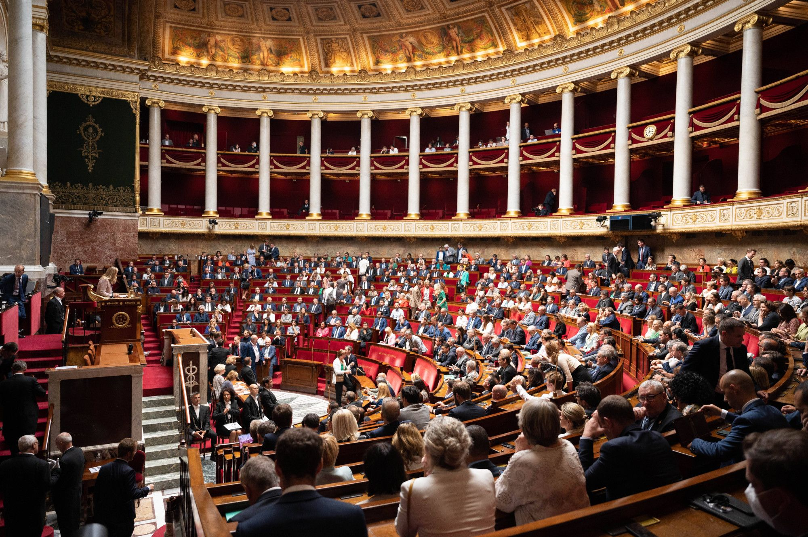
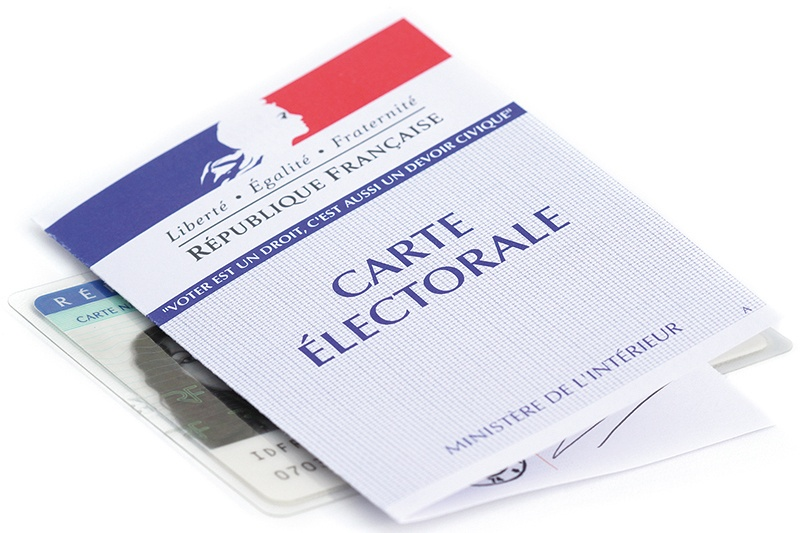
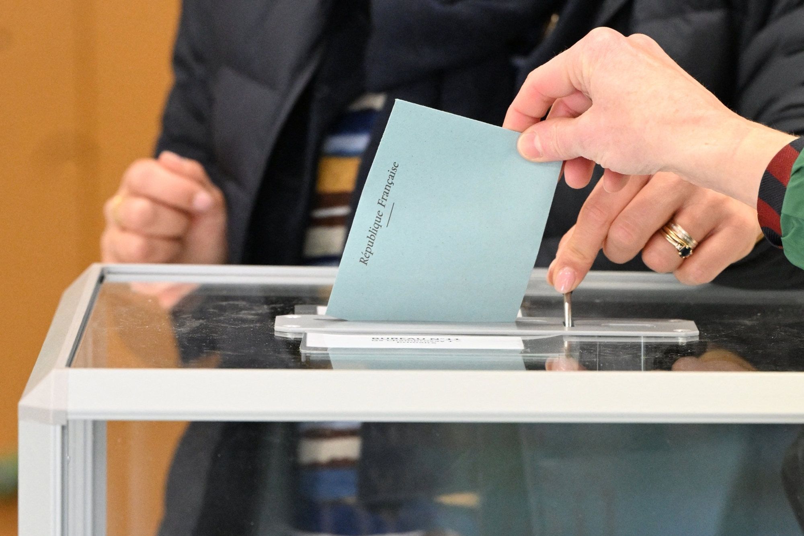

À un peu plus d'un an de la prochaine élection présidentielle, la France politique ressemble à un marché en pleine reconstruction. D'un côté, une offre partisane fragmentée, dominée par la poussée du Rassemblement national. De l'autre, une demande électorale volatile, défiante, et de moins en moins fidèle à un camp. Entre les deux, un immense espace d'incertitude.
Depuis les élections de 2017, l'irruption d'Emmanuel Macron a déstabilisé le clivage droite/gauche c'est-à-dire la division traditionnelle de l'espace politique entre un pôle conservateur et un pôle progressiste, structurant l'offre électorale depuis les années 1970. En 2017, 37 % des Français se situaient à gauche et 25 % à droite.
Macron, en convaincant les électorats modérés des deux camps, a accéléré la séparation des blocs : selon les données du CEVIPOF, le bloc de gauche est passé de 41 % en 2001 à 29 % en 2021, tandis que le bloc de droite s'est effondré de 44 % à 18 % sur la même période. Le résultat ? Un paysage où les blocs historiques sont des ruines, et où la volatilité électorale n'a jamais été aussi élevée.
Variation des préférences politiques et du vote d'un électeur d'un scrutin à l'autre. Elle renforce le caractère imprévisible du vote et affaiblit la fidélité partisane traditionnelle.

En mars 2026, après les élections municipales et la réélection d'Édouard Philippe au Havre, le paysage s'organise autour de quatre grands pôles : l'extrême droite (RN), la droite et le centre (Horizons, Renaissance, LR), la gauche socialiste et écologiste, et la gauche radicale (LFI). Mais les frontières entre ces blocs sont tendues, et aucune force politique ne parvient à parler à l'ensemble du pays.
Les sondages de début 2026 dressent un tableau remarquablement stable. Jordan Bardella domine le premier tour dans toutes les configurations testées, avec des scores oscillant entre 34 et 38,5 % des intentions de vote selon les enquêtes (Elabe, Ifop, Odoxa, Toluna Harris Interactive). Marine Le Pen, si elle venait à être candidate, recueillerait autour de 31 à 34 %. Le RN bénéficie d'un électorat désormais qualifié d'« attrape-tout » par l'Ifop : il performe aussi bien chez les salariés (38 %) que chez les retraités (33 %).
Édouard Philippe s'impose comme le principal challenger, avec 16 à 25,5 % selon les scénarios, en nette progression depuis sa réélection municipale. Gabriel Attal plafonne à 11-13 %, tandis que Bruno Retailleau (LR) se situe autour de 8-10 %.
À gauche, le duel Glucksmann-Mélenchon structure l'espace. Raphaël Glucksmann (Place Publique/PS) est crédité de 10,5 à 14 %, en légère hausse : il a pris le leadership à gauche après les tensions entre PS et LFI lors des municipales. Jean-Luc Mélenchon recule à 10,5-12 %, en perte de 2 à 3 points. Marine Tondelier (EELV) ne dépasse pas les 5 %.
| Bloc politique | Candidat principal | Intentions de vote | Rapport de forces |
|---|---|---|---|
| Extrême droite (RN) | Jordan Bardella | 34 — 38 % | |
| Centre-droit | Édouard Philippe | 16 — 25 % | |
| Gauche soc.-dém. | Raphaël Glucksmann | 10 — 14 % | |
| Gauche radicale | Jean-Luc Mélenchon | 10 — 12 % | |
| Divers droite | Zemmour, Villepin… | 3 — 6 % |
Sources : synthèse Elabe, Ifop-Fiducial, Odoxa-Mascaret, Toluna Harris Interactive — Mars 2026
Source : Ministère de l'Intérieur
Source : Elabe pour BFMTV / La Tribune Dimanche — 25-27 mars 2026
Le vote utile la décision pour un électeur de voter non pas pour son candidat préféré, mais pour celui qui a le plus de chances d'accéder au second tour, pourrait à nouveau jouer un rôle déterminant en 2027. En 2022, ce mécanisme avait massivement profité à Jean-Luc Mélenchon au premier tour : une large part de l'électorat NFP s'était regroupée derrière le candidat insoumis, jugé le plus à même de porter la gauche au second tour.
En 2027, la logique du vote utile s'annonce plus complexe. À gauche, le leadership contesté entre Glucksmann et Mélenchon empêche la stabilisation d'un vote utile clair. Au centre-droit, si Édouard Philippe parvient à s'unir à l'espace Horizons-Renaissance-LR, il pourrait concentrer un vote utile anti-RN. Les données Elabe de mars 2026 montrent que dans un duel Philippe-Bardella, l'ancien Premier ministre l'emporterait de justesse (51,5 % contre 48,5 %), grâce à d'excellents reports de voix de la gauche.
« Le vote utile n'est plus une simple tactique de barrage : il devient un mode de scrutin parallèle, où chaque électeur intègre la probabilité de succès dans son calcul. »
Les enquêtes d'opinion convergent : les trois priorités des Français pour 2026-2027 sont le pouvoir d'achat, la sécurité et l'immigration. Selon le baromètre Odoxa-Backbone Consulting de décembre 2025, le pouvoir d'achat reste la préoccupation majeure, suivi par la sécurité, en forte hausse après des faits divers médiatisés, puis l'immigration.
L'environnement recule nettement : le CEVIPOF note une baisse de 11 points en trois ans de la proportion de Français jugeant le dérèglement climatique prioritaire (46 % en 2026 contre 57 % en 2023). Cela renforce le RN, historiquement positionné sur la sécurité et l'immigration.
Lors de la présidentielle de 2022, sur 48,8 millions d'électeurs inscrits, 69,3 % avaient participé systématiquement aux deux tours, 13,2 % de manière intermittente, et 17,4 % s'étaient totalement abstenus. La participation intermittente,le fait de voter à certains scrutins et pas à d'autres, est le marqueur d'un électorat de plus en plus nomade.
La baisse de l'identité partisane confirme cette tendance. En 2013, seulement 10 % des Français déclaraient n'avoir de sympathie pour aucun parti. En 2021, ce chiffre avait bondi à 35 %. Aujourd'hui, 60 % des électeurs se déclarent proches d'aucune formation. Le baromètre CEVIPOF 2026 montre que : seulement 15 % des Français font confiance aux partis politiques.
Sexe : les femmes votent historiquement plus à gauche, mais l'écart se resserre. Âge : les jeunes s'abstiennent davantage et votent plus aux extrêmes. Diplôme : plus de diplôme oriente vers le centre ; moins de diplôme vers l'extrême droite. Classe sociale : les classes populaires penchent vers le RN, les cadres vers le centre-droit. Religion : la pratique catholique reste un prédicteur du vote de droite.
Les électeurs ne cherchent plus seulement un programme : ils cherchent une personnalité crédible. Le cours de SES identifie trois critères que les électeurs remarquent : le charisme, la capacité à représenter leurs idées, et le bilan.
Édouard Philippe coche plusieurs de ces cases. Auprès des sympathisants de droite et du centre, il suscite 76 % d'adhésion selon Odoxa. Son statut d'ancien Premier ministre lui confère un « bilan », même contesté. À l'inverse, Jordan Bardella incarne un charisme générationnel sans bilan exécutif, mais porté par 39 % d'opinions favorables, il est la personnalité politique préférée des Français. La gauche, fragmentée, peine à faire émerger une figure pour la représenter.
L'abstention, le fait de ne pas participer au vote malgré son inscription sur les listes électorales, constitue le joker de 2027. Les municipales de mars 2026 ont enregistré 42,18 % d'abstention au second tour, un record hors période Covid.
Le CEVIPOF note que 80 % des Français estiment que le gouvernement « navigue à vue », et que 88 % considèrent que les élus n'assument pas leurs échecs. En revanche, cette défiance n'est pas un rejet de la démocratie : 82 % des Français restent attachés au régime démocratique, et 72 % réclament une démocratie plus participative.
« 78 % des Français ne font pas confiance en la politique. Pourtant, 82 % louent le principe de la démocratie. Le problème n'est pas le régime, ce sont ses acteurs. »
Source : Ipsos/Talan — Législatives 30 juin 2024 (1er tour)
Le « marché politique de 2027 » est celui de tous les paradoxes. Un candidat du RN qui domine tous les sondages de premier tour mais qui pourrait être battu au second. Un bloc central en recomposition derrière une figure unique. Une gauche fragmentée qui n'a pas encore trouvé son vote utile. Et, au fond, un électorat plus volatile, plus défiant et plus intermittent que jamais.
Les déterminants sociaux du vote tels que l'âge, diplôme, classe sociale, continueront de structurer les comportements. Mais la variable décisive de 2027 sera peut-être la capacité des candidats à mobiliser un électorat qui ne demande qu'à participer… à condition qu'on lui donne une raison de le faire.
Cet article a été rédigé dans le cadre du cours de Sciences Économiques et Sociales — Chapitre 10 : Vote et participation électorale en France. Il mobilise les notions du programme (abstention, volatilité électorale, vote utile, déterminants sociaux du vote, clivage droite/gauche), enrichies par les données les plus récentes des instituts de sondage et du baromètre CEVIPOF 2026.

Le marché est ouvert. Les preneurs restent à désigner. Ce qui est certain, c'est que 2027 ne sera pas 2022. La dissolution de 2024 a fragilisé tous les repères, les municipales de 2026 ont confirmé ceci, et la défiance atteint un niveau inédit. L'électeur français de 2027 sera plus éduqué, plus informé, mais aussi plus critique, plus nomade, et moins captif qu'aucune autre génération avant lui.
Les sondages, rappelons-le, ne sont qu'une photographie à un instant donné. Comme le souligne Gaël Sliman (Odoxa) : une intention de vote à plus d'un an d'une présidentielle n'a aucune valeur prédictive.La montée de la volatilité, l'effondrement de la confiance partisane, la polarisation des enjeux — ne sont pas des artefacts statistiques. Elles sont les coordonnées d'un paysage électoral profondément recomposé.
Abstention : Non-participation au vote malgré l'inscription électorale. Taux = (abstentionnistes / inscrits) × 100.
Volatilité électorale : Variation des préférences et du vote d'un scrutin à l'autre.
Vote utile : Choix de voter pour un candidat qui n'est pas son premier choix mais qui a le plus de chances de gagner.
Clivage droite/gauche : Division traditionnelle de l'espace politique entre conservateurs et progressistes.
Déterminants sociaux du vote : Variables (sexe, âge, diplôme, classe sociale, religion) influençant la participation et l'orientation du vote.
Participation intermittente : Comportement consistant à voter à certains scrutins mais pas à d'autres.
Un baromètre en politique : Une enquête réalisée régulièrement pour mesurer l’évolution de l’opinion publique (popularité, confiance, intentions de vote) à un moment donné.
Édition spéciale — Analyse SES — Chapitre 10 : Vote et participation électorale en France
Mars 2026